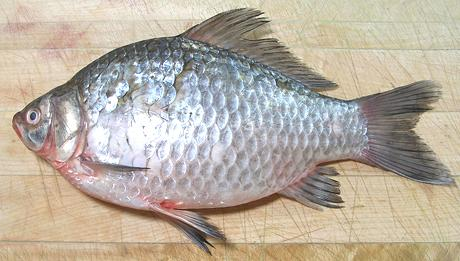

Prussian Carp

[Carassius gibelio]
This carp may have originated in eastern Asia or Siberia, but is
now also found through most of Europe. It is a fast breeder and can
becomes a pest where introduced. This fish is often confused with the
Crucian Carp, which has caused it
to be accidentally stocked where it was not wanted. The Crucian is
considered more desirable commercially. They can be told apart by
the more golden color of the Crucian, by the more deeply forked
tail of the Prussian, and the thin lining of the body cavity is black,
whereas it is white in the Crucian. This fish can grow to about 14
inches (some sources say 17 inches), but the photo specimen was 11
inches and weighed 1 pound 1-3/4 ounces.
More on the Carp Family.
Prussian Carp is a fish to eat in quiet contemplation, not boisterous
conversation, and it should never be served to children. You must pay
close attention to the fish, because its flesh has long, sharp, thread
like, "Y" shaped spines embedded in it. They are very thin and not easy
to see.
Personally I don't have a big problem with the spines. As with
other fish, I eat carp with chopsticks, breaking it up into small pieces
as I go along. The spines are fairly easy to find and pull out that way,
but some do sneak by and have to be dealt with in the mouth. Even in
formal Victorian society it was permissible to remove fish bones from
the mouth (but nothing else) so they could enjoy delicious carp.
Buying:
I have recently found this fish in a large
Philippine market in Los Angeles (Eagle Rock, actually) for 2016 US
$1.99 / pound. This market has almost always had the much larger
Common Carp, but the Prussian Carp is new.
Cooking:
Most cooking methods can be used with
Prussian Carp. Fillets can be pan fried with a light dusting of rice
flour, but not heavy batter which would make the spines very difficult
to find. For the same reason only light sauces should be used. I eat
it with my favorite Lemon
Wine Sauce for Fish.The flesh remains firm enough to steam and
poach, but is is quite tender, so a rapid boil or long cooking is
likely to break it up. You can poach fillets skin-on. They will curl,
but you can lay them out flat on the plate.
Do Not
cut any carp into pieces smaller than 2 inches long.
Doing so makes the spines nearly impossible to deal with. For small fish,
(fillets or whole) it is best to not cut them at all if possible. The
larger the fish, the easier the spines are to deal with.
Scales:
The scales are large, and have good adhesion,
so they take some energy to scrape off and fly about quite a bit. They
curl as they dry so are easy to clean up - but don't let them get into
your drains, they could clog.
Cleaning:
This fish is fairly easy to clean, just cut
from the vent right up to the underside of the jaw (you'll need kitchen
shears from the pelvic fins forward) and pull stuff out. While the
innards pull out easily enough, there's quite a lot of them, and they
are rather mushy. Rinse the cavity well, rubbing off any remaining
mush. The gills are fairly easy to pull out, but break up a lot.
Skin:
Prussian Carp skin shrinks only moderately when
cooked. It has no strong or objectional flavors, so it hardly seems
worth the bother to remove it. If you insist, Prussian Carp fillets can
be skinned using the standard long knife and cutting board
Method, but be warned - the skin
is thin, delicate and breaks up very easily - better to leave it.
Filleting:
This fish is fairly easy to fillet, with
a coherent bone structure to follow. The flesh is, however, soft and
tender, so handle with care. When you get to the rib cage, just use
your kitchen shears to cut the ribs from the backbone and pull them
from the fillet with long nose pliers. There are no centerline pin
bones to pull.
Yield:
The photo specimen, 11 inches long and 1 pound
1-3/4 ounces yielded 8-3/8 ounces of skin-on fillet (47%). Some fish,
with more stuff inside, have yielded 43% skin-on.
Stock:
Prussian Carp heads, fins, bones and any removed
skins make a rather strong stock with a flavor I do not particularly
like.
sf_carppruz* 160423 - www.clovegarden.com
©Andrew Grygus - agryg@clovegarden.com - Photos
on this page not otherwise credited © cg1
- Linking to and non-commercial use of this page permitted